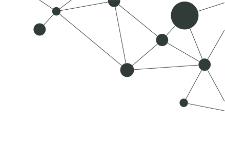
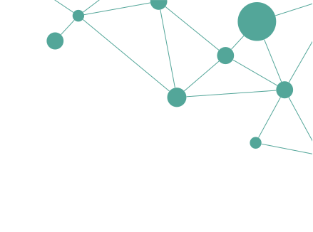
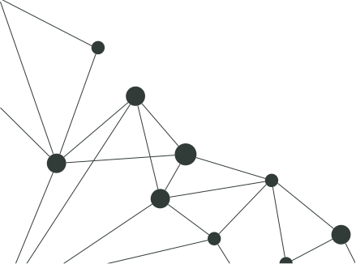
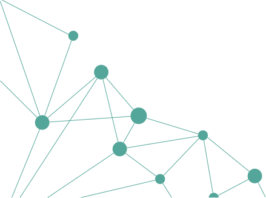

Bootcamp de Programación Web Full Stack
Hack a Boss




Soy Full Stack Developer y especialista IT, con experiencia combinando desarrollo de software, sistemas e infraestructura tecnológica.
Actualmente trabajo como IT Manager, donde gestiono el área tecnológica de la empresa y combino administración de sistemas, redes, Microsoft 365, seguridad, soporte y desarrollo de aplicaciones y herramientas internas.
Me gusta entender la tecnología de principio a fin: desde desarrollar una aplicación hasta desplegarla, administrar los sistemas que la rodean y resolver los problemas que aparecen por el camino.
Hack a Boss
Ceinpro
Ceinpro
Xabier Zubiri Manteo
Desarrollo, sistemas y tecnología desde diferentes perspectivas, siempre con un enfoque práctico y orientado a resolver problemas.
Elduaien Hizkuntza Eskola
Responsable del departamento de informática, combinando gestión tecnológica, sistemas, infraestructura y desarrollo de soluciones internas para dar soporte a la actividad diaria de la empresa.
Gestión de equipos, redes, dispositivos e infraestructura tecnológica de los diferentes centros.
Desarrollo y mantenimiento de aplicaciones web y herramientas internas orientadas a mejorar procesos.
Administración de usuarios, correo, licencias, permisos, grupos, Teams y herramientas colaborativas.
Gestión y consulta de bases de datos SQL y automatización de tareas y procesos internos.
Intelligent Biodata
Desarrollo y mantenimiento de una plataforma web, participando tanto en frontend como en backend y creando funcionalidades orientadas a la gestión interna y al tratamiento de información.
Desarrollo de interfaces, lógica de aplicación y nuevas funcionalidades.
Funcionalidades para empleados, usuarios, permisos, vacaciones y proyectos.
Tratamiento, análisis y representación visual de información y gráficos.